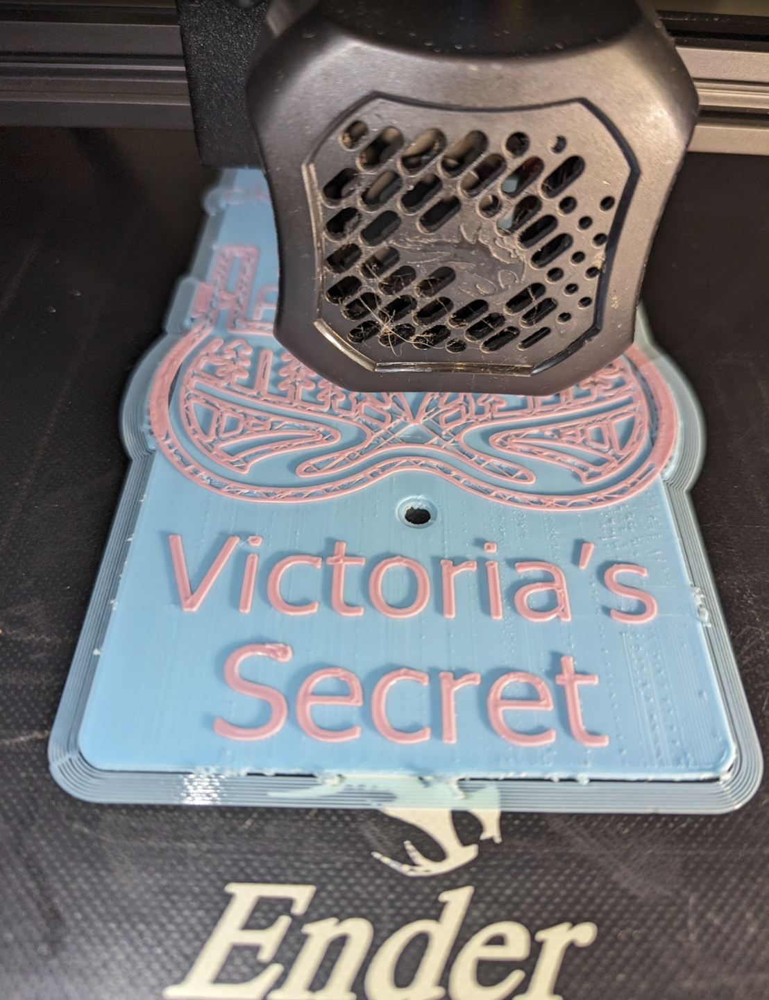

"Victoria's Secret — literally ‘Victoria, she keeps it secret from her (obviative)’ / ‘the thing she keeps secret’"

3D printed plaque: black bra-silhouette filled with a pine-forest landscape on a pale-blue background, with the carved text 'victoria okimôtânimiyiwa' and 'Victoria's Secret' under it.
The Edmonton trail named ‘Victoria's Secret’ is named for the small, lacy-looking line of the same nickname in the local MTB network — a piece of techy bench-cut singletrack that drops east-west along the river just south of the 102 Ave bridge, with off-camber roots, a couple of switchbacks, and a hidden, somewhat-private feel to it that earns the joke. The English name predates the plaque by years among the local riders who built and maintain the line; the Cree name victoria okimôtânimiyiwa reads that joke back through Plains Cree morphology.
Built up, the phrase is ‘Victoria, she keeps it secret from her (obviative)’: the borrowed name victoria followed by a fully-Cree VTA verb in obviative — the 3rd-person prefix o‑, the steal/stealth root kimôt‑, the ‑âni‑/‑m‑/‑iyi‑/‑wa relational tail that places the ‘her’ (the secret-keeper's secret) one degree further away than the agent. Plains Cree obviation lets the language pin down whose secret it is and whose it is from in a way English needs an extra ‘from’ for. The result is a phrase that reads as a small piece of grammar in motion: a proper noun handed to a verb that does the work of marking the secret as Victoria's own.
The plaque carries that reading visually as well. A black silhouette in the shape of a bra fills the pale-blue plaque, but the cups are not blank — they are filled with a forested pine-and-hill landscape with a small switchback path through it. The trail itself, in other words, is hidden inside the joke. Underneath, the carved Cree text victoria okimôtânimiyiwa and the English ‘Victoria's Secret’ run side-by-side. The trail sits on ᓀᐦᐃᔭᐤ ᐊᐢᑭᕀ Nêhiyaw‑Askiy (Plains Cree territory) in the Central Edmonton (North) river-valley network, near the Lovers Lane heart-plaque and the Wonder Woman silhouette — a small cluster of MTB-vernacular signs now also wearing a Plains Cree reading.
Explore the trail on Trailforks, with a local preview from the uploaded GPX.
The bare AI verb ‘s/he steals.’ Inside the headword the same kimôt‑ root carries the ‘keep secret / take by stealth’ reading.
The free-standing adverbial form. Anchors the ‘secret / sly’ semantic field that the headword verb is built on.
Sister VTA verb in the same kimôt‑ family: same stealth root, different action. ‘To secretly watch / spy on someone.’ Confirms the productive use of kimôt‑ as a stealth modifier on other verb roots.
| English | SRO | Syllabics |
|---|---|---|
| Victoria's Secret — ‘Victoria, she keeps it secret from her’ | victoria okimôtânimiyiwa | victoria ᐅᑭᒨᑖᓂᒥᔨᐘ |
| S/he steals | kimôtiw | ᑭᒨᑎᐤ |
| Secretly, in stealth | kîmôc | ᑮᒨᐨ |
| S/he secretly watches / spies on him/her | kimôtâpamêw | ᑭᒨᑖᐸᒣᐤ |
| Her (obviative) — the further-away ‘her’ | ‑iyiwa | ᔨᐘ |
SRO uses ê î ô â. Syllabics match the SRO shown.
Dialectal preferences may affect minor spelling choices; check local norms for signage.
References: itwêwina, Online Cree Dictionary, Plains Cree Dictionary
Each sign is 3D printed in Edmonton. Want one for your own trail, cabin or wall?